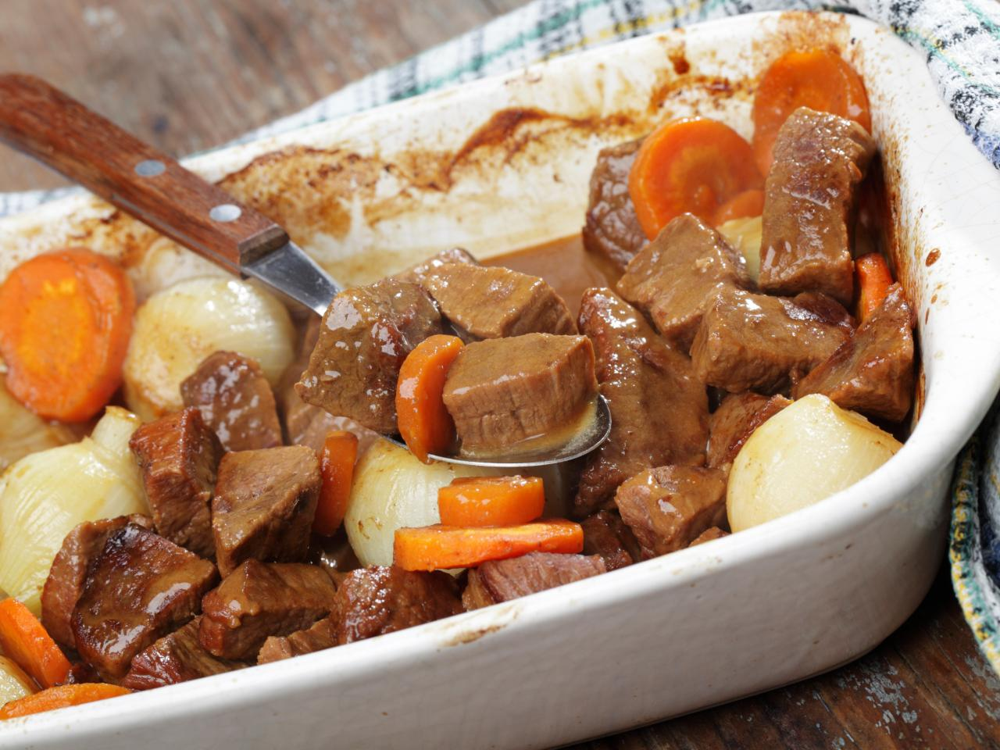

Anthony Bourdain's Boeuf Bourguignon

Anthony Bourdain, renowned chef, author and world explorer, first published this recipe in his 2004 cookbookLes Halles, which features recipes from the French bistro style restaurant of the same name, along with Bourdain's signature wit and charm. In his own words, "Boeuf Bourguignon is one of those classic French dishes that is easy to prepare, sticks to your ribs and will dazzle your guests."
What You'll Need
- Dutch oven or large, heavy-bottomed pot
- Wooden spoon
- Ladle or large spoon
- kitchen twine
Ingredients
- 2 9lb Paleron (top blade shoulder cut) of beef, cut into 1 1/2-inch pieces
- 1 Garlic Clove
- 1 Bouquet Garni (bundle of herbs, I recommend parsley, thyme, and bay leaf)
- 1/4 cup of Olive Oil
- 4 Onions, thinly sliced
- 1 tbs All-Purpose Flour
- 1 cup red Burgundy wine
- 6 Carrots, cut into 1-inch pieces
- Salt
- Pepper
- A pinch of chopped Flat Parsley
Steps
- Season beef with salt and pepper
- Heat oil in Dutch oven on high heat until almost smoking
- Add meat in batches
You do not want to crowd the pan, you'll cool the pan too much
- Sear the meat in batches until well-browned on all sides, remove from pot to cutting board
- Add onions to the pot and lower heat to medium-high
- Cook onions until soft and golden brown (~10 minutes)
- Sprinkle flour over the onions and cook about 4-5 minutes, stirring occasionally
- Add red wine and scrape the fond from the bottom of the pot
This adds an amazing flavor to the dish
- Bring the wine to a boil
- Once boiling, return meat to the pot and add carrots, garlic, and bouquet garni
- Add just enough water to cover the meat 1/3
This should give you a ratio of 2 parts meat to 3 parts liquid
- Bring pot back to a boil, then reduce to simmer
- Let simmer for 2 hours, or until meat is "break-with-a-fork" tender
Bourdain's words, not me
- Make sure to check every 15-20 minutes, stirring and scrapping the bottom of the pot
This ensures the meat isn't sticking to the bottom and scorching
- Also be sure to skim off any foam, scum, or oil on the surface with spoon or ladle
- Once done, remove and discard the bouquet garni, add chopped parsley, and serve
Rest In Peace Chef Bourdain